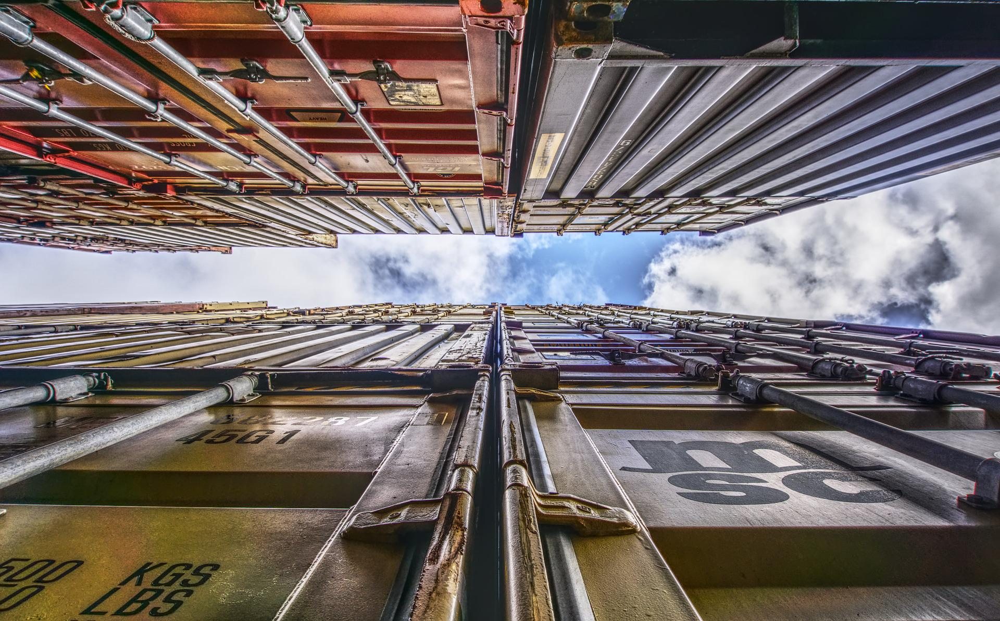
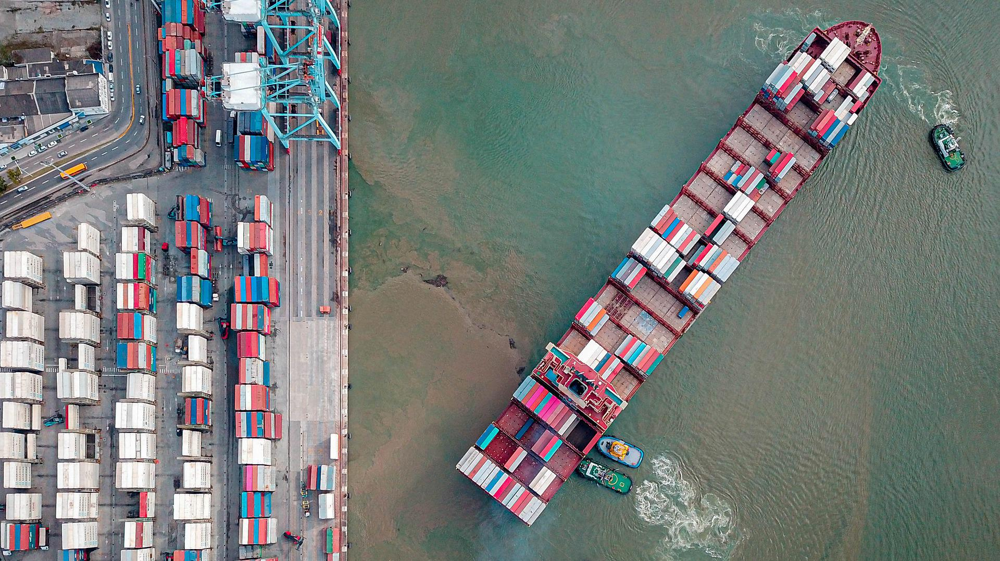
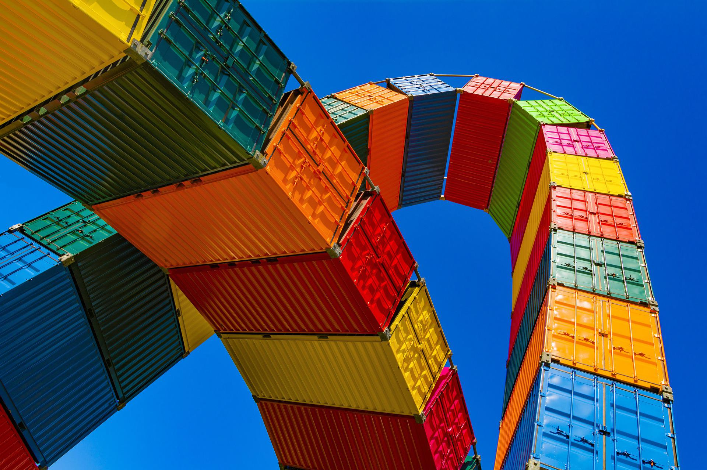

home > 기업소개 > 연혁
연혁
세방은 1965년 항만하역 사업에 첫 발을 내디딘 후 지난 반세기 동안 전국 주요 항만 및 물류 거점에 경쟁력 있는 물류 네트워크를 구축, 명실상부한 대한민국 대표 종합물류 기업으로 성장했습니다.
- 2019
- 우수녹색물류실천기업 인증 획득
- 철강무역상사 (주)성진실업 인수
- 수출입 안전관리 우수업체(AEO) AA등급 취득
- 안성 수도권 제3물류센터 준공
- 2017
- 안성 수도권 제3물류센터 착공
- 세방비나 흥옌 물류센터 개장
- 2016
- 대일특수 인수
- 2015
- 세방비나 법인 설립
- 2014
- 마산지점 명칭변경(창원지점)
- 2013
- AEO(하역업, 보세운송업, 보세구역운용) 3개 부문 취득
- 2012
- 광양항 동축배후단지 운영사 선정
- 군장항 잡화부두(79, 79-1번 선석)개장
- 안성 수도권 물류센터 증축

- 2006
- 안성 수도권 물류센터 증축
- 2005
- 상호변경: 세방기업(주) ⇒ 세방(주)
(GLOBAL ENTERPRISES, LTD ⇒ SEBANG CO., LTD) - NEW CI 선포
- 광양인터내셔널컨테이너터미널주식회사 계열회사에 추가
- 광양항 항만관련부지의 임대사용을 위하여 한국컨테이너 부두공단과 양해각서 체결
- 한진해운과 부산감만 및 광양1단계 컨테이너 부두 선석 통합운영 양해각서(MOU)체결
- 2004
- 이리슬 코리아(주) 설립
- 군산컨테이너터미널운영㈜ 출자
- 군산 제3부두 특허보세구역 특허장 면허취득
- 경기도 의왕 ICD 보세창고 자율관리보세구역지정
- 2003
- 폐수배출시설설치 면허취득
- 감만 컨테이너 보세창고 특허보세구역 특허면허
- 광양 LME 사업개시
- 부산 LME 사업개시
- 2002
- 군산항 제5부두 57~58번 선석 운영권
- 광양항 및 부산항에서의 LME (London Metal Exchange) 사업의 기반을 구축함에 따라
지방해양수산청으로부터 LME 사업적격업체로 선정 - 씨앤지 해운㈜ 출자 (지분율 : 50%)
- LME 지정창고 관련 현대화기금
- 군산항 제5부두 57~58번 선석운영권
- 부산 스카니아 4대, 볼보트랙터 2대구입
- 광양터미날 무선랜 시스템 구입
- 2001
- ISO 환경인증 획득 (마산,삼천포지점)
- 광양 위험물임시저장 · 취급 면허취득
- 세방광양터미널운영㈜ 설립
- 일본 외국적 선사 K-Line과 감만터미널 ON-DOCK 계약 및 우암 CY Handling 계약체결
- 2000
- 부산 민락 CY 폐쇄
- 포스코 부산사무소 신설
- KEDO 경수로 원자력발전소 2기 건설기자재 운송,하역계약 체결
- 세방컨테이너터미널부두운영㈜ 설립
- 양산 ICD 개설
- 부산 수영 CY 폐쇄
- 부산감만컨테이너터미널 개장
- 부산항 감만부두컨테이너터미널 1개 선석 전용사용권 및 하역장비와 부대장비에 관한 양수도 계약
- ISO 품질인증 획득 (본사, 광양, 마산, 삼천포, 울산, 군산, 경인지점)
- 전자 상거래 및 택배사업

- 1999
- 광양컨테이너터미널 개장
- 광양항 컨테이너터미널 1개 선석의 운영권 (광양컨테이너터미널 1개 선석 운영권 및 장비:하역장비, 전산관련 S/W,GATE SYSTEM 및 주변기기,기타 하역과 관련된 부대시설) 양수
- 당진지점 신설
- 부두운영사업 (TOC), 화물자동차운송주선업
- 1994
- 종합건설사업(토목, 건축공사) 면허→전문건설업 면허반납 (비계공사업, 철물공사업)
- 자동차운송알선사업면허
- 컨테이너수리업 등록
- 복합운송주선업 면허
- 1989
- 건설업 면허 (비계공사업, 철물공사업)
- 후꾸오까 국제페리사 현지법인 설립
- 부산진 CY/CFS 폐쇄
- 진주사업소 폐쇄
- 감만동 CFS 설치 (부산 우암 CY)
- 전주지점 설치
- 1985
- 동해지점 설치
- 대성상운(주)으로부터 북평항 및 묵호항 항만하역운송사업 면허 양수
- 부산구역 화물자동차운수사업면허
- 중기정비사업 면허
